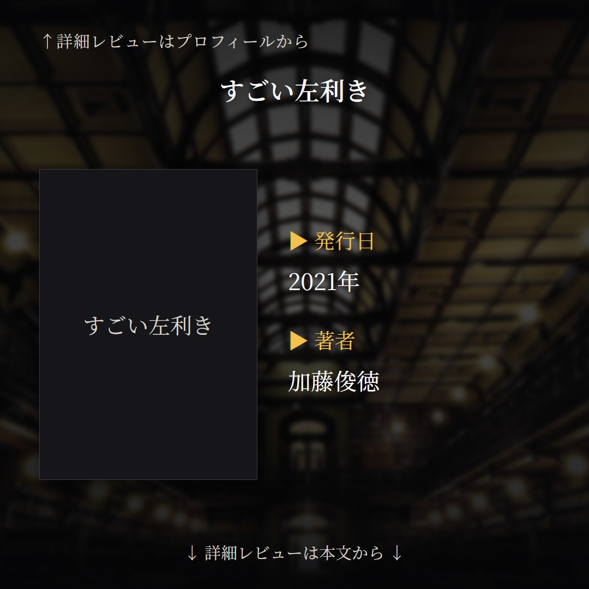
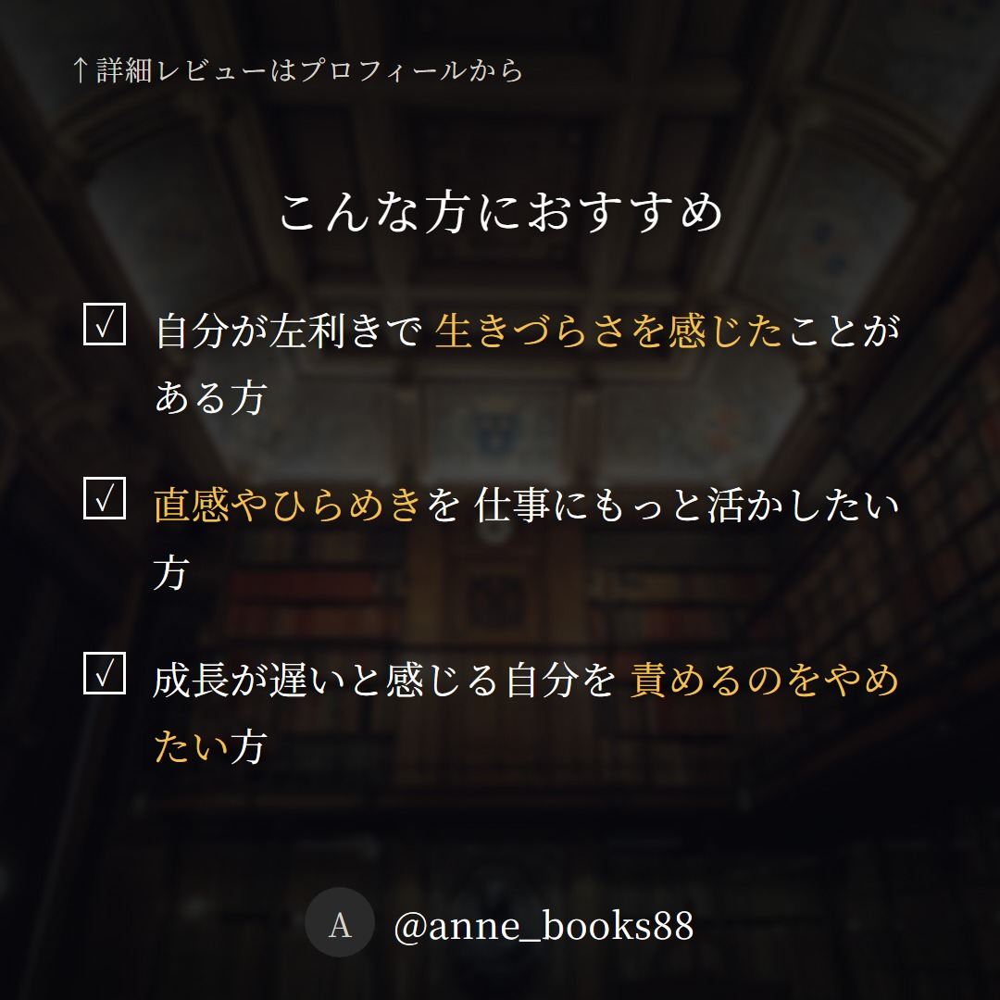
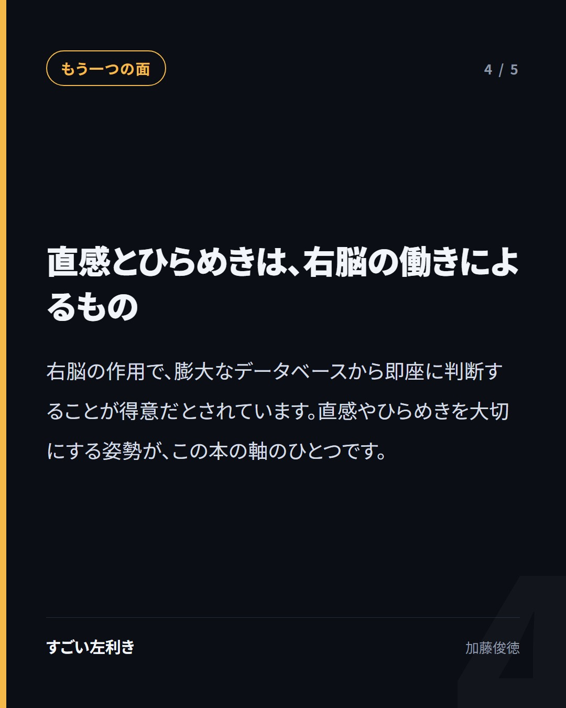
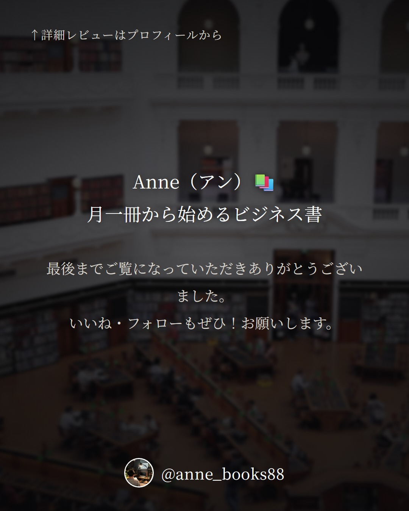
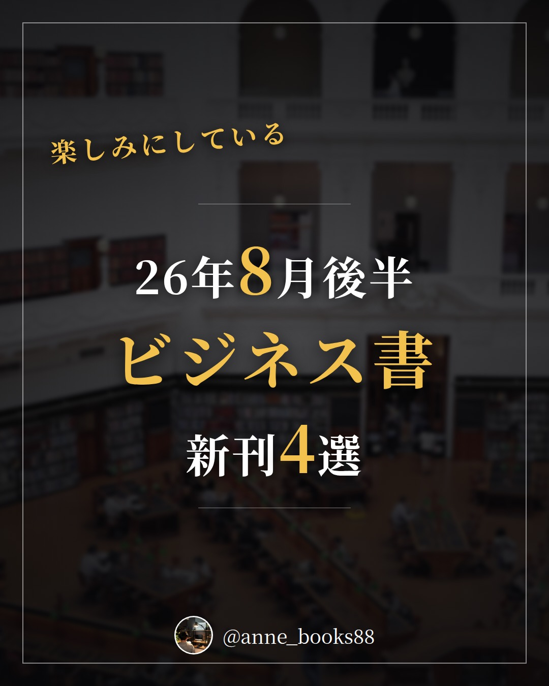
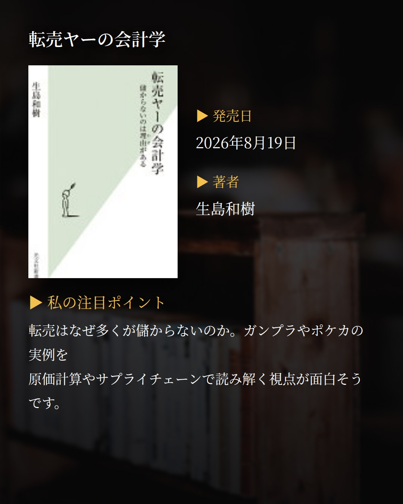
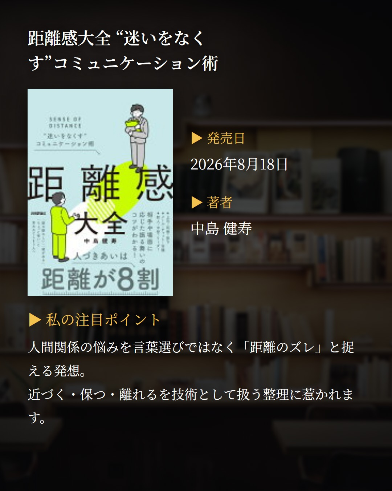
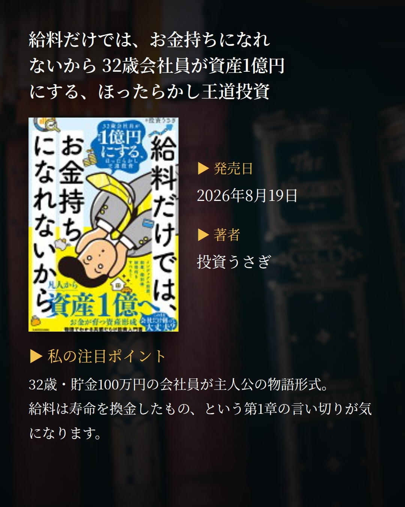
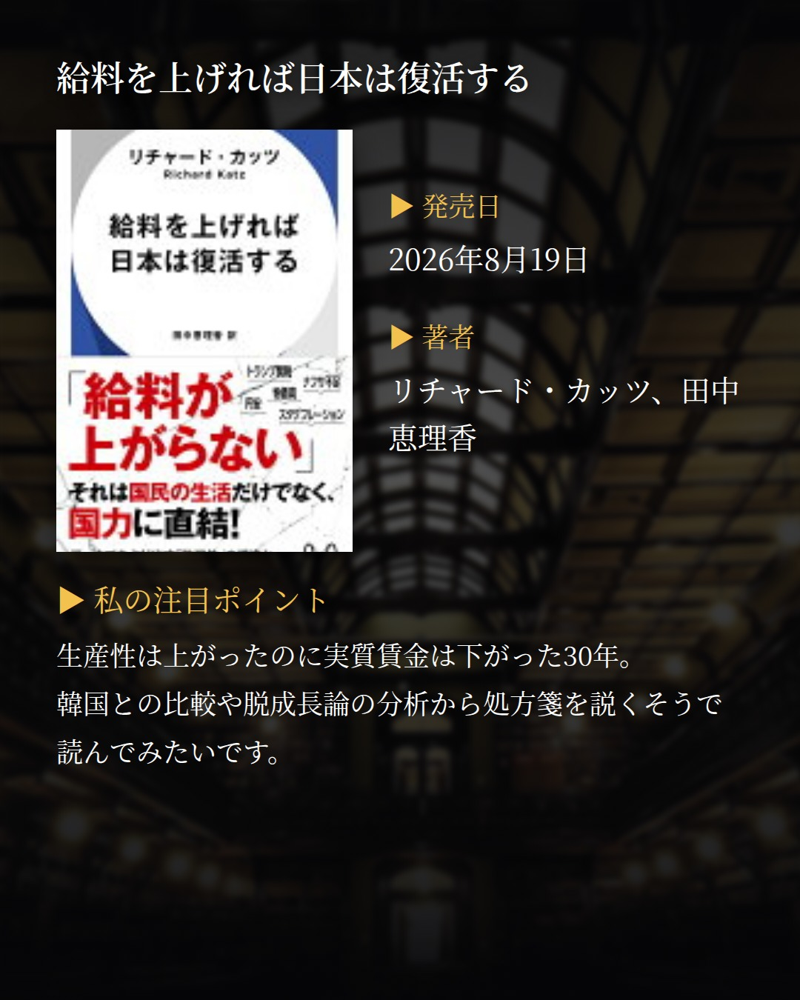
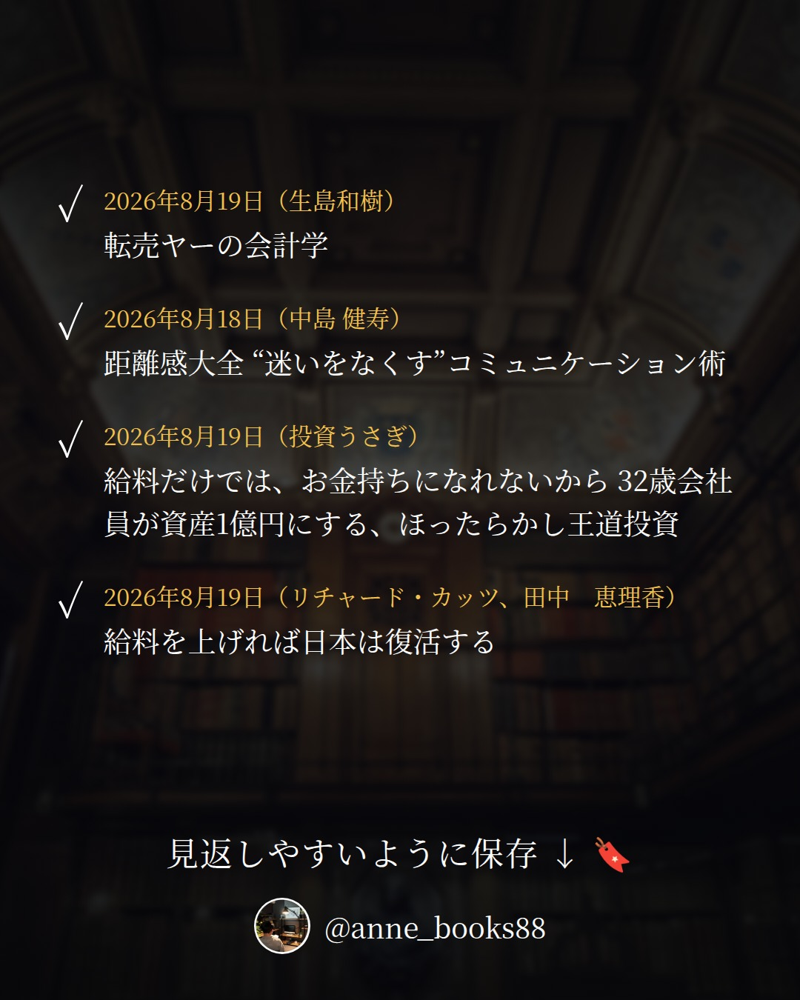

投稿プレビュー 2026-W34
内容を確認して、問題なければ Pull Request をマージしてください。 マージされた日付だけが自動投稿されます。修正する場合は drafts/ 以下の JSON を直接編集してください。
08/20 (Thu)
すごい左利き
加藤俊徳




カードの文言
- 1 表紙: 理解がワンテンポ遅いのは 脳をたくさん使っている証拠
- 2 書誌情報: 2021年9月30日 / 加藤俊徳
- 3 おすすめ1: 自分が左利きで 生きづらさを感じたことがある方
- 3 おすすめ2: 直感やひらめきを 仕事にもっと活かしたい方
- 3 おすすめ3: 成長が遅いと感じる自分を 責めるのをやめたい方
- 4 問いかけ: 人と同じ速さで 理解できないことは 本当に欠点でしょうか
- 5 本文: 左利きは大器晩成。 言葉を司るのは左脳なので 子供の時は成長が遅い
- 6 本文: 右脳の作用で 膨大なデータベースから 即時に判断することが得意
- 7 本文: 右利きなら当たり前にできることが うまくいかない経験から 忍耐力にも優れる
- 8 本文: 1日の終わりに その日を映像で思い出す。 右脳を整えるトレーニング
- 9 まとめ: 遅さの正体は 脳の使い方の違い。 左利きの特性を知る一冊
キャプション
今回は、脳の使い方から自分の特性を知る一冊です。 1万人の脳を見た医師が、左利きの脳の働きを解説した本。読んでいて特に印象に残ったのは、左利きは大器晩成だという話です。言葉を司るのは左脳なので、子供の時はどうしても右利きの方が理解が早い。つまり幼い頃の「遅さ」は能力の差ではなく、脳の配線の違いだという説明でした。 もう一つ面白かったのが、ワンテンポ理解が遅いのは右脳経由で脳の思考回路をたくさん使っているから、という視点。同じ現象が、欠点ではなく手数の多さとして語られます。その代わりに得意なのが、膨大なデータベースから即時に判断すること。だから左利きは直感やひらめきを大切にするといいのだそうです。 さらに、右利きなら当たり前にできることがうまくいかない経験を重ねるから、忍耐力にも優れていると言われるという指摘も。 具体的なトレーニングとして紹介されていたのは、1日の終わりにその日の出来事を映像で思い出すこと。右脳には様々な情報が浮かんでいるだけで、左脳のように理路整然としているわけではないので、映像で整理する習慣が効くという話でした。 自分の遅さを責めてしまう日がある方に、そっと読んでほしい一冊です。
書籍固有ハッシュタグ
根拠メモ (grounding)
- cover・point4段目「ワンテンポ理解が遅いのは右脳経由で脳の思考回路をたくさん使ってるから」＝読書メモ4項目目
- point1「左利きは大器晩成。子供の時は成長が遅い（言葉を司るのは左脳）」＝読書メモ1項目目
- point2「膨大なデータベースから即時に判断することが得意」＝読書メモ2項目目
- point3「右利きなら当たり前にできることがうまくいかない→忍耐力」＝読書メモ3項目目
- point4「1日の終わりに映像で思い出すトレーニング」＝読書メモ5項目目
- キャプション「1万人の脳を見た医師」＝正式書名の表記に基づく
- question・recommend・summaryは読書メモの内容を読者向けに言い換えたもの（メモの範囲内）
- 「自分の遅さを責めてしまう」などの読者像はメモから推測した表現（データに直接の根拠なし）
- 出版年2021年・著者名・出版社＝書誌データ
08/21 (Fri)
月の立つ林で
青山美智子


カードの文言
- 1 表紙: 満ち欠けを繰り返しながら 今日を生きる 五人の物語
- 2 書誌情報: 2022年11月9日 / 青山美智子
- 3 おすすめ1: つまずいてばかりの毎日に 少し疲れている方
- 3 おすすめ2: 短編がゆるやかにつながる オムニバスを味わいたい方
- 3 おすすめ3: 何かを新しく 始めたい気持ちのある方
- 4 問いかけ: 似ているようで違う一日を、 あなたはどう始めますか
- 5 本文: 元看護師、芸人、整備士、 女子高生、アクセサリー作家。 五人それぞれの日常が描かれる
- 6 本文: 彼らをつなぐのは タケトリ・オキナの ポッドキャスト『ツキない話』
- 7 本文: 各章の主人公が微妙に つながりあうオムニバス形式
- 8 本文: 朔（つきたち）は旧暦の新月。 何かを始めるのに ちょうどいい日
- 9 まとめ: 月の満ち欠けに重ねて 新しい一日を思い出させる一冊
キャプション
今回は、久しぶりに小説を。2023年本屋大賞にノミネートされた青山美智子さんの『月の立つ林で』です。 登場するのは、長年勤めた病院を辞めた元看護師、夢を諦めきれない芸人、家族との関係の変化に寂しさを抱える二輪自動車整備士、早く自立したい女子高生、仕事と家族のバランスに悩むアクセサリー作家。それぞれが日常でつまずきながら、タケトリ・オキナという男性のポッドキャスト『ツキない話』に耳を傾けます。 面白かったのは、各章の主人公たちが微妙につながりあうオムニバス形式であること。読み進めるうちに、さっきの話の隅にいた人が次の章の主役になっている、そんな感覚がありました。 もうひとつ、私にとっての発見は「朔（つきたち）」という言葉です。一日（ついたち）は旧暦で新月のこと。月がまた満ちていく起点だから、何かを始めるのにちょうどいい日なのだと理解しました。人も同じで、満ち欠けを繰り返しながら新しい毎日を紡いでいく。そう思うと、うまくいかない日にも意味がある気がします。 出版社の紹介によると、最後に仕掛けられた事実と読後に気づく繋がりが胸を打つ一冊とのこと。そこはぜひご自身で確かめてみてください。
書籍固有ハッシュタグ
根拠メモ (grounding)
- 書名・著者・出版社・出版日：書誌データ
- 表紙「満ち欠けを繰り返しながら」：内容紹介『満ち欠けを繰り返し、新しくてかけがえのない毎日を紡いでいく』
- recommend「つまずいてばかりの毎日」：内容紹介『つまずいてばかりの日常』
- recommend「新しく始めたい」：読書メモ『何かを始めるのにちょうどいい日』
- question「似ているようで違う一日」：内容紹介『似ているようでまったく違う、新しい一日を懸命に生きるあなたへ』
- point1 五人の職業：内容紹介の登場人物の記述
- point2 タケトリ・オキナ／『ツキない話』：内容紹介
- point3 オムニバス形式：読書メモ
- point4 朔＝旧暦の新月：読書メモ
- キャプションの本屋大賞ノミネート・最後の仕掛け：出版社の内容紹介（キャプション内で出典を明示）
- ジャンル「小説」：内容紹介の記述からの判断
08/22 (Sat)
GAFA nest stage
スコット・ギャロウェイ, 渡会 圭子


カードの文言
- 1 表紙: コロナで肥え太った 巨大帝国が 再び世界を変える
- 2 書誌情報: 2021年12月3日 / スコット・ギャロウェイ, 渡会 圭子
- 3 おすすめ1: GAFAの次の一手を 知っておきたい方
- 3 おすすめ2: コロナが経済に何を 残したのか整理したい方
- 3 おすすめ3: 自分の業界の未来を 考えておきたい方
- 4 問いかけ: 彼らは何を壊し、何を創るのか。 私たちはその世界で どう生きるのか
- 5 本文: 米国のeコマースは コロナ後のたった8週間で 10年分の成長が起きた
- 6 本文: 極小のウイルスが 特大の加速装置となり GAFAの成長を促した
- 7 本文: 痛みは弱者に アウトソーシングされ 貧富の差はさらに広がる
- 8 本文: GAFAは今後5年で 収益を1兆ドル増やす必要がある。 次の獲物はどの業界か
- 9 まとめ: 四騎士＋Xが塗り分ける 赤と青の世界を 先に見ておく一冊
キャプション
今回は、GAFAのその後を扱ったビジネス書です。『the four GAFA』の著者スコット・ギャロウェイによる最新刊で、コロナ以降に巨大帝国がどう膨らんだのかを追いかけた一冊でした。 読んでいて一番手が止まったのは、米国のeコマースがコロナ以降のたった8週間で10年分の成長を遂げたという話です。極小のウイルスが特大の加速装置になり、GAFAの成長をさらに促してしまった。時間の流れそのものが変わったのだと実感しました。 もうひとつ印象に残ったのが、痛みが弱者にアウトソーシングされ、貧富の差がさらに拡大していく構図です。強者はもっと強くなり、弱者はもっと弱くなる。加速の裏側で何が起きているのかを、目を逸らさずに書いているところが誠実だと感じました。 そして本書は「＋X」として、マイクロソフト、エアビーアンドビー、ネットフリックス、テスラ、ショッピファイなど多くの企業を取り上げています。GAFAは今後5年で収益を1兆ドル増やす必要があり、そのために新しい市場へ入り込んでいく。次の獲物はあなたの業界かもしれない、という指摘は他人事ではありません。 自分の仕事がどの側に置かれているのか、一度考えてみたくなる本でした。
書籍固有ハッシュタグ
根拠メモ (grounding)
- 表紙・summary: 内容紹介「コロナで肥え太った巨大帝国が『再び』世界を変える」「四騎士＋Xが世界を『絶望の赤』と『希望の青』に塗り分ける」
- question: 内容紹介「彼らは何を壊し、何を創るのか？ 私たちは彼らの世界でどう生きるのか？」
- points1・2: 読者本人の読書メモ「コロナ以降のたった8週間で10年分の成長」「極小のウイルスが特大の加速装置」
- points3: 内容紹介「痛みは『弱者にアウトソーシング』された」「強者はもっと強くなり、弱者はもっと弱くなる」＋読書メモ「貧富の差がさらに拡大する構図」
- points4: 内容紹介「GAFAは今後5年で収益を1兆ドル増やす必要がある」「次なる獲物は、あなたの業界かもしれない」
- キャプションの企業名: 内容紹介の『＋X』企業リストより
- recommend3項目: 内容紹介の趣旨から構成（一般論を含む）
08/23 (Sun)
行動経済学が最強の学問である
相良 奈美香


カードの文言
- 1 表紙: 人はなぜ 合理的に選べないのか 意思決定のしくみ
- 2 書誌情報: 2023年6月5日 / 相良 奈美香
- 3 おすすめ1: 人の意思決定のクセを 仕事に活かしたい方
- 3 おすすめ2: 行動経済学の主要理論を 体系立てて学びたい方
- 3 おすすめ3: 身近な事例から 経済と心理の関係を つかみたい方
- 4 問いかけ: あなたの選択は 本当に自分で 決めたものですか
- 5 本文: 行動経済学は経済学と心理学の融合 非合理な意思決定を解明する学問
- 6 本文: 本書は主要理論を 認知のクセ・状況・感情の 3つに大別して整理する
- 7 本文: 選択肢が多すぎると人は選べない 情報オーバーロードと リコメンド機能
- 8 本文: 人は自分を誘惑に強いと思いがち 自制バイアスを前提に置く
- 9 まとめ: 日常の選択を 読み解く視点をくれる 行動経済学の入門書
キャプション
今回は、いま世界のビジネス界で注目が集まっているという「行動経済学」の一冊です。行動経済学とは、人間の非合理な意思決定のメカニズムを解明する学問。従来の経済学は人が経済的かつ合理的に動くことを前提にしていますが、実際の私たちはさまざまな要因で合理的に判断できません。そのズレを扱うのが行動経済学だと理解しました。 面白かったのは、主要理論を「認知のクセ」「状況」「感情」の3つに大別して整理している点です。新しい学問ゆえに体系化されてこず、理論を一つずつ丸暗記するしかなかった、という出版社の説明にも納得しました。 個別の理論も身近でした。選択肢が多すぎると選べなくなる情報オーバーロードは、ネットフリックスやアマゾンプライムのリコメンド機能につながる話。自制バイアスは、人間は自分が誘惑に強いと思いがちなので、むしろ自分はある程度誘惑に弱いと想定しておいたほうがいい、という指摘。デュレーションヒューリスティックは、時間をかけたほうが相手の満足度が上がるというもの。メニューにドルマークがないだけでお金と結びつく気持ちが弱まり散財する、という話も印象に残りました。 私は面白そうだったので電子書籍で購入しましたが、身近に感じられて理解しやすく、言われるとそうだなと思うことがよくありました。自分の選択を少し疑ってみたい方に。
書籍固有ハッシュタグ
根拠メモ (grounding)
- 書名・著者・出版社・出版日=書誌データ
- cover/question の「合理的に選べない」=読書メモ「人間の非合理な意思決定のメカニズムを解明する学問」
- points1=読書メモ「経済学と心理学の融合」
- points2=目次の第1〜3章および読書メモ「認知のクセ/状況/感情に大きく大別」
- points3=読書メモ「情報オーバーロード：選択肢が多過ぎると選択できない→ネットフリックスやアマプラのリコメンド機能」
- points4=読書メモ「自制バイアス」
- recommend2「体系立てて学びたい」=内容紹介「主要理論を初めて体系化する」
- キャプションの丸暗記の記述=出版社の内容紹介が根拠
- キャプションのデュレーションヒューリスティック・ドルマーク=読書メモ
- キャプション末尾の購入経緯と所感=読書メモ本人の記録
- summary「入門書」という位置づけ=一般論（データに明記なし、序章の記述からの解釈）
08/25 (Tue)
26年8月後半
殿堂入り書評


カードの文言
- 1 表紙: 何度も読み返したい / 今も読み継がれるビジネス書殿堂入り4選
- 2 もし高校野球の女子マネージャーがドラッカーの『マネジメント』を読んだら（レビュー5,317件 ★4.0 / 岩崎 夏海） 読み継がれている理由: ドラッカーの『マネジメント』を、高校野球部の変革という物語で読み解く一冊。 「顧客は誰か」「真摯さとは何か」を実践として考えられます。
- 3 エッセンシャル思考 最少の時間で成果を最大にする（レビュー1,271件 ★4.2 / グレッグ・マキューン、高橋 瑠子） 読み継がれている理由: 「より少なく、しかしより良く」を掲げ、99%を捨てて1%に集中する考え方の本。 時間術ではなく、重要なことを見極める方法論として書かれています。
- 4 さおだけ屋はなぜ潰れないのか？（レビュー1,063件 ★4.0 / 山田真哉） 読み継がれている理由: 身近な疑問から会計のエッセンスに近づく読み物。 財務諸表も専門用語もほとんど出てこないので、数字が苦手でも読み進められます。
- 5 改訂版 金持ち父さん 貧乏父さん:アメリカの金持ちが教えてくれるお金の哲学（レビュー651件 ★4.2 / ロバート・キヨサキ、白根 美保子） 読み継がれている理由: 刊行から20年以上、51ヶ国語に翻訳されてきたお金の基本図書。 「金持ちはお金のためには働かない」など、六つの教えが軸になっています。
- 6 まとめ: チェックリスト
キャプション
今も読み継がれているビジネス書を4冊まとめました。1冊目の『もし高校野球の女子マネージャーがドラッカーの「マネジメント」を読んだら』は、経営学の理論を高校野球部の物語に置き換えた一冊。2冊目の『エッセンシャル思考』は、99%の無駄を捨てて1%に集中するための方法論が書かれています。3冊目の『さおだけ屋はなぜ潰れないのか？』は、日々の生活の身近な疑問から会計のエッセンスを学んでいく読み物。4冊目の『金持ち父さん 貧乏父さん』は、刊行から20年以上読み継がれてきたお金の基本図書です。特に3冊目の『さおだけ屋はなぜ潰れないのか？』は、細かい財務諸表がひとつも出てこないと明記されているところが気になります。会計の入門書ではなく読み物として書かれた、という立ち位置が長く支持されてきた理由なのかもしれません。おすすめな本があればぜひコメントいただけると幸いです！
書籍固有ハッシュタグ
根拠メモ (grounding)
- 1冊目:内容紹介の『マネジメント』の理論を頼りに野球部を変革、真摯さ・顧客は誰かに基づく
- 2冊目:『より少なく、しかしより良く』『99%の無駄を捨て1%に集中』『単なるタイムマネジメントではない方法論』に基づく
- 6冊目:『身近な疑問から会計の重要なエッセンス』『細かい財務諸表はひとつも出てきません』『ひとつの読み物として』に基づく
- 15冊目:『刊行から20年経った今でも』『51ヶ国語に翻訳』『金持ちはお金のためには働かない』『金持ち父さんの六つの教え』に基づく
- テーマ分散:経営/思考法/会計/お金の4方向
08/26 (Wed)
スタンフォード式 最高の睡眠
西野精治


カードの文言
- 1 表紙: 睡眠は「時間」ではなく 「質」で決まる 最初の90分の話
- 2 書誌情報: 2017年3月1日 / 西野精治
- 3 おすすめ1: 寝つきが悪くて 朝もすっきり起きられない方
- 3 おすすめ2: 日中の眠気に 悩まされている方
- 3 おすすめ3: 土日の寝だめで 疲れを取ろうとしている方
- 4 問いかけ: 眠った時間の長さだけで 疲れは本当に 取れているのでしょうか
- 5 本文: 睡眠は「時間」ではなく「質」。 著者が30年近く研究して たどり着いた結論
- 6 本文: 眠り始めの 「黄金の90分」に 最高の睡眠の鍵がある
- 7 本文: 寝だめは基本できない。 平日の不足を土日で 取り戻すのは無理
- 8 本文: 1時間早く寝るのは難しい。 潔く1時間早く起きると 心積もりする方がいい
- 9 まとめ: 長く寝るより、 最初の90分を整える。 眠りの常識を見直す一冊
キャプション
今回は、睡眠をテーマにしたビジネス書です。スタンフォード大学の睡眠研究機関で所長を務める西野精治先生が、30年近くの研究からたどり着いた「最高の睡眠」の考え方をまとめた一冊。出版社の紹介によると、スタンフォードは「睡眠研究のメッカ」と呼ばれる場所だそうです。 本書の軸は「睡眠は『時間』ではなく『質』で決まる」という一文。章立てにも「夜に秘められた『黄金の90分』の法則」とあり、眠り始めの90分がいかに大事かが繰り返し語られます。長く寝られない日があっても、最初の90分の質を上げれば手は打てる。そう考えられるだけで、少し気持ちが軽くなりました。 私が読んでいて特に納得したのは、寝だめは基本的にできないという話。平均7.2時間の睡眠でも足りていないぶんを、土日でまとめて取り戻すのは無理なのだと知りました。 もうひとつは、明日に備えて1時間早く寝るのは難しい、という指摘。それなら潔く1時間早く起きるつもりでいた方が、結果としてよい睡眠が得られる。早寝を頑張って布団の中で目が冴えるより、ずっと現実的です。 寝つきが悪い、朝起きられない、日中眠い。心当たりがある方は、まず今夜の最初の90分から見直してみませんか。
書籍固有ハッシュタグ
根拠メモ (grounding)
- 書名・著者・出版社・出版日は書誌情報より
- cover・points1「時間ではなく質」は内容紹介の引用文より
- points2「黄金の90分」は目次2章より
- points3「寝だめは基本出来ない／平均7.2時間」は読書メモより
- points4「1時間早く寝るのは難しい／1時間早く起きる」は読書メモより
- recommend「寝つきが悪い・朝起きれない・日中眠たい」は内容紹介より
- キャプションの「睡眠研究のメッカ」「30年近く研究」は出版社の内容紹介より（その旨を明記）
- summary「最初の90分を整える」は目次2章と内容紹介からの要約
- キャプション中の『気持ちが軽くなりました』『納得した』等の所感は読書メモの内容に沿った感想表現（メモ外の実体験は記載していない）
08/27 (Thu)
26年8月後半
小説 新刊特集


カードの文言
- 1 表紙: 読んでみたい / 26年小説新刊4選
- 2 永遠の記憶（2026年8月5日 / 東野 圭吾） 私が気になった理由: 内海薫が刺され、老人は黙秘のまま。 湯川と草薙が追う「忘れてはいけない謎」が気になります。
- 3 夜明けのはざま（2026年9月2日 / 町田 そのこ） 私が気になった理由: 家族葬専門の葬儀社が舞台。 間に合わなかった後悔とどう向き合うのか、読んでみたいです。
- 4 誰何（2026年8月19日 / 伏尾美紀） 私が気になった理由: 二年前に亡くなったはずの女性が、都内で孤独死。 道警と警視庁、二つの現場に残された同じ名刺が気になります。
- 5 トレヴァー短編選集1（2026年8月7日 / ウィリアム・トレヴァー、栩木 伸明） 私が気になった理由: 20分で世界の見え方が反転する短編集という一節に惹かれました。 新訳4編を含む全8編、少しずつ読み進めたいです。
- 6 まとめ: チェックリスト
キャプション
8月後半に出た小説から、気になる4冊をまとめました。特に1冊目の『永遠の記憶』は、内海薫が刺されるという出だしからして落ち着いていられません。犯人の老人は黙秘を貫き、内海に恨みを持つ娘との関係も不明。しかも本当の復讐はこれからだと書かれていて、湯川と草薙が「忘れてはいけない謎」にどう向き合うのかを追いかけたいです。2冊目の『夜明けのはざま』は家族葬専門の葬儀社が舞台で、間に合ったことと間に合わなかったこと、どちらが多いだろうという問いかけが胸に残りました。3冊目の『誰何』は、二年前に亡くなったはずの女性が孤独死したという知らせから始まる設定に引き込まれます。4冊目の『トレヴァー短編選集1』は、20分の読書で世界観が静かに反転するという紹介に惹かれ、寝る前に一編ずつ読みたいと思いました。おすすめの本があればぜひコメントいただけると幸いです！
書籍固有ハッシュタグ
根拠メモ (grounding)
- 20: 内海薫が刺された/犯人は70歳ほどの老人/黙秘/恨みを抱く若い娘/本当の復讐はこれから/湯川と草薙、忘れてはいけない謎
- 7: 家族葬専門の葬儀社「芥子実庵」/間に合ったことと間に合わなかったこと、どちらが多いだろう
- 14: 松川美和が孤独死、二年前に亡くなったはず/新内の名刺が部屋に/道警の砂本も被害者宅で名刺を発見
- 18: 20分の読書が読者の世界観を静かに反転させる/新訳4編を含む全8編
08/28 (Fri)
科学者たちが語る食欲
David Raubenheimer、Stephen J. Simpson、櫻井祐子 訳


カードの文言
- 1 表紙: 食べすぎるのは 意志の弱さではなく タンパク質のせい
- 2 書誌情報: 2021年1月 / David Raubenheimer、Stephen J. Simpson、櫻井祐子 訳
- 3 おすすめ1: カロリー計算だけの ダイエットに 疲れている方
- 3 おすすめ2: 食欲が止まらない 理由を科学から 知りたい方
- 3 おすすめ3: 家族の食事を 長い目で 見直したい方
- 4 問いかけ: なぜ私たちは お腹いっぱいのはずなのに 食べすぎてしまうのか
- 5 本文: タンパク質の比率が高いと 炭水化物と脂肪の摂取が減り 結果としてカロリーも減る
- 6 本文: 乳児にはタンパク質比率が 最も低い食事がよい 高すぎると将来の必要量が増える
- 7 本文: 健康のために避けたいのは 超加工食品 食べたいのは高タンパク質と繊維
- 8 本文: カロリー信奉をやめて 空腹のときに食べる 習慣をつける
- 9 まとめ: 食欲を敵ではなく 仕組みとして理解し直す 食事の科学の本
キャプション
今回は、食欲を科学の視点から解き明かす一冊です。 この本の中心にあるのは、人間はタンパク質の摂取比率が高い場合、過剰摂取を防ぐために炭水化物と脂肪の摂取を減らす、という話。結果として摂取カロリーが自然に減り、体重の抑制につながるという流れが面白かったです。食べすぎを意志の問題にしないところに納得感がありました。 もう一つ印象に残ったのが、乳児には最もタンパク質比率が低い食事がよいという指摘。大人の話と一見矛盾して見えますが、タンパク質比率が不自然に高い食事を与えるとタンパク質ターゲット自体が上がってしまい、将来的に必要なタンパク質が増える可能性があるからだそうです。食事は今日一日の話ではなく、身体の基準そのものを作っていくのだと感じました。 健康のために必要なこととして挙げられていたのは、自分のタンパク質ターゲットを理解する、超加工食品を避ける、高タンパク質品を食べる、繊維を食べる、カロリー信奉をやめる、空腹のときに食べる習慣をつける、の6つ。どれも極端ではなく、続けられそうな内容です。 お腹が減っていないときの間食、思い当たる方はぜひ。
書籍固有ハッシュタグ
根拠メモ (grounding)
- 表紙・4枚目：読書メモ「人間はタンパク質の摂取比率が高い場合、過剰摂取を防ぐため炭水化物と脂肪の摂取を減らす」に基づく
- 5枚目：同上（必然的に取得カロリー量が減り、体重抑制に効く）
- 6枚目：読書メモ「乳児は最もタンパク質比率が低い食事がベスト」「タンパク質ターゲットが上がり将来的に必要なたんぱく質が増える可能性」
- 7枚目：読書メモ「②超加工食品を避ける ③高タンパク質品を食べる ④繊維を食べる」
- 8枚目：読書メモ「⑤カロリー信奉をやめる ⑥空腹の時に食べる習慣をつける」
- おすすめ3項目：読書メモの6項目から想定読者を推定（データを踏まえた解釈）
- まとめ：読書メモ全体および正式書名『食べすぎてしまう人類に贈る食事の話』からの要約
- 書誌情報：サンマーク出版・2021年1月・ISBN9784763137920に基づく
- 「意志の弱さではなく」という表現は本文にある言葉ではなく、メモ内容からの言い換え
08/29 (Sat)
世界のエリートはなぜ「美意識」を鍛えるのか
山口周


カードの文言
- 1 表紙: 論理だけでは 決められない時代の 意思決定
- 2 書誌情報: 2017年7月19日 / 山口周
- 3 おすすめ1: 数字と分析だけの判断に 限界を感じている方
- 3 おすすめ2: 感性や直感を 仕事に活かしたい方
- 3 おすすめ3: 複雑な状況で 判断の軸を持ちたい方
- 4 問いかけ: 分析と論理に頼った経営で 今の世界を 舵取りできますか
- 5 本文: マネジメントは3種類 サイエンス・クラフト・アート
- 6 本文: アートだけでは盲目的 3つをバランスよく磨く
- 7 本文: 何をしないか決めるのは 何をするか決めるのと同じくらい大事
- 8 本文: 誠実さとは組織のルールでなく 自分の中の規範に従うこと
- 9 まとめ: 感性を鍛える必要はある でもそれだけでもダメ その両方を教えてくれる一冊
キャプション
今回は、経営における「アート」と「サイエンス」を扱った一冊です。先月読んだ『ニュータイプの時代』に続いて2冊目の山口周さん。面白くて、こちらも購入しました。2時間くらいでさっと読める分量です。 印象に残ったのは、マネジメントのスタイルが3種類あるという話。数値や事実に基づくサイエンス型、知識や経験に基づくクラフト型、感性や直感に基づくアート型。アートだけだと盲目的なナルシストになり、クラフト型は経験に根ざしたものしか評価できず、サイエンスは数値で証明できないことをやらない。だから3つをバランスよく磨いていく必要がある、という整理がすっきりしていました。感性を鍛えろ、という話だけで終わらないところが好きです。 もうひとつ、誠実さの定義も刺さりました。自分が所属する組織やルールに従うことではなく、社会的規範や自分の中の規範に従うこと。判断に迷ったとき、どこを見るのかという話だと受け取りました。 ジョブズの「何をしないのかを決めるのは、何をするのか決めるのと同じくらい大事だ」という言葉も引かれています。会社についても製品についても、というところまで含めて。 数字だけでは決めきれない場面が増えていると感じる方に。あなたはいま、何をしないと決めていますか。
書籍固有ハッシュタグ
根拠メモ (grounding)
- cover・question：出版社紹介の「分析」「論理」「理性」に軸足をおいた経営では複雑で不安定な世界の舵取りはできない、という記述
- recommend：出版社紹介のサイエンス重視の意思決定の限界、および読書メモの3つのスタイルをバランスよく磨く記述からの推測を含む
- points1・2：読書メモ「マネジメントのスタイルは3種類」およびアート/クラフト/サイエンスの短所とバランスの記述
- points3：読書メモに記載のジョブズの言葉
- points4：読書メモ「誠実さの定義」
- summary：読書メモ「感性を鍛える必要はあるが、それだけではもちろんダメ」
- caption：読書メモ（2冊目の山口周、購入、2時間くらいでさっと読める）、3種類のマネジメント、誠実さの定義、ジョブズの言葉
- published：出版日2017年7月19日
- 著者名：書誌データの「山口周1970-」より姓名部分のみ使用
08/30 (Sun)
決断の本質
マイケル・A・ロベルト、スカイライトコンサルティング


カードの文言
- 1 表紙: 反論できない場は 決断を誤る 意思決定の質を問う
- 2 書誌情報: 2006年7月 / マイケル・A・ロベルト、スカイライトコンサルティング
- 3 おすすめ1: チームの意思決定の質を 上げたい方
- 3 おすすめ2: 反対意見が出ない会議に もやもやしている方
- 3 おすすめ3: リーダーとして判断の 進め方を見直したい方
- 4 問いかけ: 「判断は自分に任せろ」 と言った瞬間、 何が失われるのか。
- 5 本文: エベレスト登頂前、 論争を歓迎しないと 釘を刺したリーダー
- 6 本文: 引き返すべきと 分かっていた人がいても 誰も提案できなかった
- 7 本文: 代替案を用意し均等に評価。 一つのグループの案に 依存しない
- 8 本文: 事前に一部の人だけに 情報を渡すやり方は プロセスとして適切でない
- 9 まとめ: 決断そのものより、 決断に至る場のつくり方を 問い直す一冊
キャプション
今回はリーダーシップと意思決定の本です。『戦争論』を手がかりに、決断の本質を考える一冊でした。 印象に残ったのは、エベレストのエピソードです。ロブ・ホールは登頂前、登山客に対して「登山の間は意見の相違や論争を歓迎しない、判断は自分に任せるべきだ」と釘を刺しました。その結果、2時までに登頂できないと分かっていたはずなのに、誰も引き返すことを提案できなかった。反論を封じることが、リーダー自身の判断を守るどころか、誰も止められない状況をつくってしまう。ここは読んでいて息をのみました。 もう一つ、キューバ危機とピッグス湾事件のプロセスの比較も面白かったです。大統領がどう振る舞うか、代替案を設けて均等に評価すること、一つのグループのアイディアに依存しないこと。参加者を選ぶときも、専門知識の有無、実行する際にその人物が必要かどうか、腹心としての役割、そして多様性を意識する。決断は個人の才覚ではなく、設計されたプロセスなのだと思わされました。 6色ハット法の話も出てきます。人間は肯定するより否定するほうが知的に思われると考えがちだという指摘、耳が痛いです。類似性、他社の模倣、経験則。どれも判断の材料になり得るけれど、過大評価は禁物。事前に一部の人だけに情報提供すると、残された人は疎外感や既成事実を押し付けられる感覚を持つ、というくだりも実感がありました。 会議で反対意見が出ないとき、それは合意なのか沈黙なのか。一度立ち止まって考えてみたい方に。
書籍固有ハッシュタグ
根拠メモ (grounding)
- 表紙・問いかけ・point1,2：読書メモ「ロブホールはエベレスト登頂前に…論争を歓迎しない/判断は自分に任せるべき/2時までに登頂できないと分かっていたはずも誰も引き返す事の提案ができなかった」
- point3：読書メモ「キューバ危機とビッグス湾事件のプロセスの特徴／代替案を設け均等に評価、一つのグループアイディアに依存しない」
- point4：読書メモ「事前に一部の人だけに情報提供する…意思決定のプロセスとしては適切ではない」
- キャプションの参加者選定・6色ハット法・類似性・模倣・経験則の記述：読書メモ該当箇所
- recommend3項目・まとめ：上記メモ内容からの要約（メモに直接の文言なし）
- 著者名・出版社・出版日・正式書名：書誌データ
- ピッグス湾の表記はメモの「ビッグス湾」を一般的表記に改めたもの（判断による調整）
08/31 (Mon)
26年8月後半
ビジネス書 新刊特集






カードの文言
- 1 表紙: 楽しみにしている / 26年ビジネス書新刊4選
- 2 転売ヤーの会計学（2026年8月19日 / 生島和樹） 私の注目ポイント: 転売はなぜ多くが儲からないのか。ガンプラやポケカの実例を 原価計算やサプライチェーンで読み解く視点が面白そうです。
- 3 距離感大全 “迷いをなくす”コミュニケーション術（2026年8月18日 / 中島 健寿） 私の注目ポイント: 人間関係の悩みを言葉選びではなく「距離のズレ」と捉える発想。 近づく・保つ・離れるを技術として扱う整理に惹かれます。
- 4 給料だけでは、お金持ちになれないから 32歳会社員が資産1億円にする、ほったらかし王道投資（2026年8月19日 / 投資うさぎ） 私の注目ポイント: 32歳・貯金100万円の会社員が主人公の物語形式。 給料は寿命を換金したもの、という第1章の言い切りが気になります。
- 5 給料を上げれば日本は復活する（2026年8月19日 / リチャード・カッツ、田中 恵理香） 私の注目ポイント: 生産性は上がったのに実質賃金は下がった30年。 韓国との比較や脱成長論の分析から処方箋を説くそうで読んでみたいです。
- 6 まとめ: チェックリスト
キャプション
8月後半の気になる新刊をまとめました。特に1冊目の『転売ヤーの会計学』は、転売という身近すぎる話題を会計学者が原価計算やサプライチェーンの視点で分析するという切り口で、なぜ多くの転売は儲からないのかという問いから始まるところに惹かれました。2冊目の『距離感大全』は、人間関係のつまずきを言葉選びではなく相手との距離のズレとして捉え直す本。距離感はセンスではなく技術だと言い切っているのが気になります。3冊目の『給料だけでは、お金持ちになれないから』は、貯金100万円の会社員が主人公の物語形式で投資を追体験できる構成だそうです。4冊目の『給料を上げれば日本は復活する』は、労働生産性は向上したのに実質賃金は下がったこの30年を、韓国との比較から読み解くとのこと。お金をめぐる話が自然と多くなった月でした。
書籍固有ハッシュタグ
根拠メモ (grounding)
- 14: 内容紹介の「転売はなぜ、その多くが儲からないのか」「会計学者がガンプラ、ポケカ…原価計算・サプライチェーンの視点で分析」に基づく
- 8: 「人間関係がうまくいかない本当の原因は…相手との『距離』のズレ」「『距離感』は『センス』とされがちですが、誰でも再現できる『技術』」「近づく・保つ・離れる3つの技術」に基づく
- 16: 「32歳、独身、貯金100万円」「ごく普通の会社員」「物語だからスラスラ読めて」「1.給料とは、寿命を換金したものである」に基づく
- 18: 「この30年、労働生産性の向上と裏腹に実質賃金は低下」「韓国との比較や脱成長論の批判的分析を通じ、回復への処方箋を説く」に基づく
- 除外理由: 1・2・5・6・7・12は会計・税理士試験の専門書/問題集、3・4・20は実務マニュアル、11・15はビジネス書ではないため
09/01 (Tue)
脱日本的思考のすゝめ
永田 公彦


カードの文言
- 1 表紙: 日本の当たり前を 一度脇に置く グローバル思考
- 2 書誌情報: 2023年3月1日 / 永田 公彦
- 3 おすすめ1: 外国人の同僚や取引先と 働く機会が増えた方
- 3 おすすめ2: 英語力より先に 何を鍛えるべきか 知りたい方
- 3 おすすめ3: 意思決定の遅さを 組織の課題だと 感じている方
- 4 問いかけ: あなたが当たり前だと 思っている働き方は 海外でも通じますか
- 5 本文: 肩書きではなく 相手本人に目を向ける。 個人の考えが優先される文化
- 6 本文: 戦略と文化がぶつかれば 必ず文化が勝つ。 人の習慣は変えられない
- 7 本文: 名前を呼ぶ、あいさつする、 お礼を言う。 日本人が苦手な基本動作
- 8 本文: Yesと言う割にレスが遅い。 意思決定と初動の遅さを 見直す
- 9 まとめ: 7つの当たり前から抜け出し 異文化の中で働く 実践の手引き
キャプション
今回はグローバルビジネスの現場で使う「異文化マネジメント」の本です。パリを拠点に20年以上、欧州・日本・アジアでコンサルティングとグローバルリーダーシップ教育を行ってきた著者が、日本文化や日本企業の特質を踏まえて実践方法を解説しています（ここは出版社の内容紹介より）。 読んでいて特に残ったのは三つでした。ひとつめは、肩書きにこだわらず相手本人に目をやること。日本人はどうしても肩書に目がいきますが、まず何より個人の考えが優先される文化がある、という指摘です。 ふたつめは、戦略と文化がぶつかったときは必ず文化がまさるということ。人の習慣は変えられない、という前提に立つのは大事だと感じました。 三つめは、日本人が苦手だけれど意識してやるべきこととして挙げられていた、名前を呼ぶ・あいさつをする・お礼を言う、そして早く本音に入ること。Yesと言う割にレスが遅い、という点は耳が痛いところで、意思決定と初動の遅さは意識して見直していきたいと思いました。 目次には「外から目線で日本を伝える能力」「英語や戦略よりも大事な異文化マネジメント力」などが並びます。英語より先に鍛えるものがある、という視点が知りたい方はぜひ。
書籍固有ハッシュタグ
根拠メモ (grounding)
- 書名・著者・出版社・出版日はすべて書誌データより
- cover「日本の当たり前」は序章『7つの「当たり前」から抜け出し人生の可能性を拡げる』より
- recommend1は内容紹介『外国人の社員、クライアント、事業パートナーなどと接する機会が国内外で増えています』より
- recommend2は第2章『英語や戦略よりも大事な異文化マネジメント力』より
- recommend3は読書メモ『意思決定と初動の遅さを意識して見直していく』より
- question は序章タイトルの「当たり前から抜け出し」を問いに変換したもの
- points1は読書メモ『肩書きにこだわらず相手本人に目をやる／まず何より個人の考えが優先される文化』より
- points2は読書メモ『戦略と文化は必ず文化がまさる（人の習慣は変えられない）』より
- points3は読書メモ『名前を呼ぶこと/あいさつをすること/お礼（ありがとう）をいうこと』より
- points4は読書メモ『日本人はYesという割にレスが遅い／意思決定と初動の遅さ』より
- summaryは序章タイトルと内容紹介『実践方法について解説します』より
- キャプションの著者経歴（パリ拠点・20年以上・欧州/日本/アジア）は出版社の内容紹介より、その旨を明記
- キャプションの目次言及は第1章・第2章のタイトルより
- ジャンル・ページ数は不明のため触れていない
09/02 (Wed)
苦しかったときの話をしようか
森岡毅


カードの文言
- 1 表紙: 会社と結婚するな、 職能と結婚せよ
- 2 書誌情報: 2019年4月12日 / 森岡毅
- 3 おすすめ1: やりたいことが わからなくて悩んでいる方
- 3 おすすめ2: 今の会社で何が伸ばせるかを 考え直したい方
- 3 おすすめ3: 自分の強みを 言葉にしてみたい方
- 4 問いかけ: あなたが結婚しているのは 会社ですか、 それとも自分の職能ですか。
- 5 本文: 会社と結婚するな、職能と結婚せよ。 その会社で自分の何が伸ばせるか。
- 6 本文: AIで合理化できるのは 創造的に頭を使っていない仕事。
- 7 本文: 資本主義とは、無知と愚かさに 罰金を課す仕組み。
- 8 本文: 好きなことを書き出して T・C・Lのどれかを見つける。
- 9 まとめ: 父から我が子への手紙の形で 働くことの本質を語る一冊。
キャプション
今回はキャリアと働き方について考える一冊です。図書館で予約していたことさえ忘れるくらい前に予約した本の順番が回ってきて、ようやく読了しました。 私が一番刺さったのは「会社と結婚するな、職能と結婚せよ」という言葉。その会社に居続けることではなく、その会社で自分の能力の何が伸ばせるかを考えることが重要だという視点です。会社選びの基準そのものが変わる考え方だと思いました。 もうひとつ印象的だったのが、AIで合理化できるのは創造的に頭を使っていない仕事だという指摘。そして「資本主義とは無知であることと愚かであることに罰金を課すこと」という一文。厳しい言い方ですが、目をそらさずに読みたい部分でした。 本書には自分の好きなことを書き出して強みを探すワークもあります。T（thinking／問題を解く・分析・知ること）、C（communication／友達が増える・人が集まる場所）、L（leadership／達成すること・自分で決めること）。どれが自分に近いか、考えてみると面白いです。 勤勉さが日本人の取り柄なのに猛烈に働かなくてどうする、という一節にも背筋が伸びました。自分自身のブランドイクイティは何か。人間関係以上に、自分の結果とパースペクティブにフォーカスし続けること。読み終えて、そこに立ち返りたいと思いました。 あなたなら、T・C・Lのどれを選びますか。
書籍固有ハッシュタグ
根拠メモ (grounding)
- 表紙・point1「会社と結婚するな、職能と結婚せよ」＝第1章の目次および読書メモ（その会社で自分の能力の何が伸ばせるか）
- point2「AIで合理化できるのは創造的に頭を使っていない仕事」＝読書メモそのまま
- point3「資本主義とは無知であることと愚かであることに罰金を課すこと」＝読書メモそのまま
- point4 T・C・L＝読書メモの好きなこと書き出し（thinking/communication/leadership）
- recommend1「やりたいことがわからなくて悩む」＝第1章タイトル
- recommend2＝読書メモ「その会社で自分の能力の何が伸ばせるか」
- recommend3「自分の強み」＝第3章「君の強みをどう知るか？」
- question＝第1章目次と読書メモをもとにした問いかけ（一般論として言い換え）
- summary「父が我が子のために書きためた働くことの本質」＝正式書名の副題
- キャプションの図書館予約・勤勉さ・ブランドイクイティ・結果とパースペクティブ＝読書メモそのまま
- 出版日2019年4月12日＝書誌データ